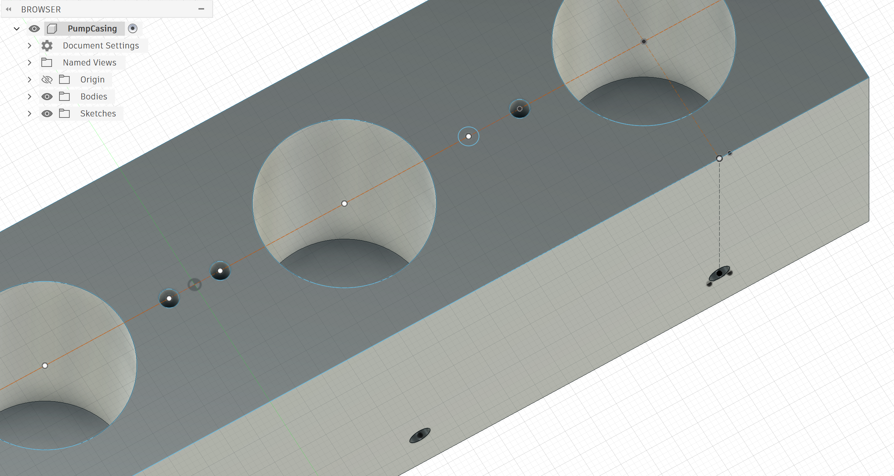
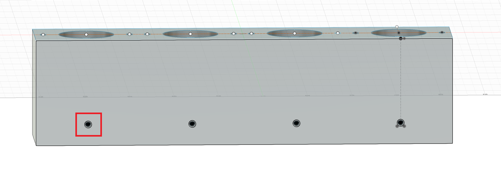
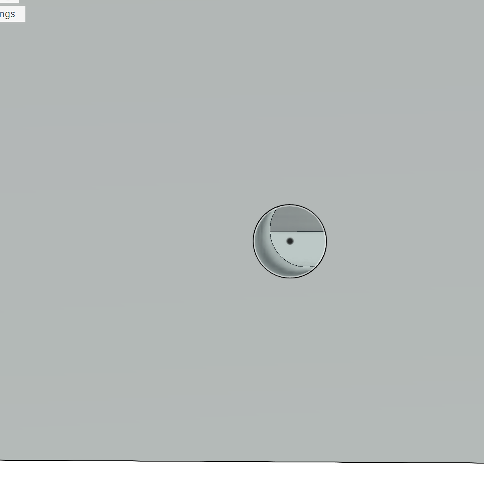
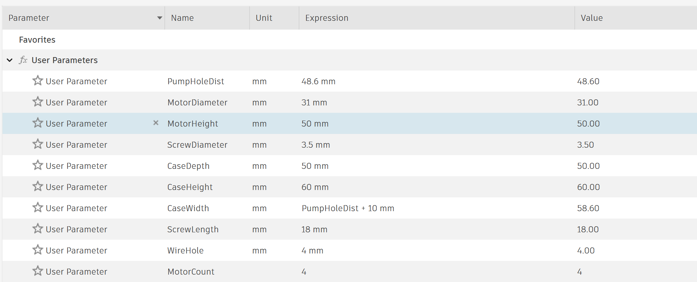
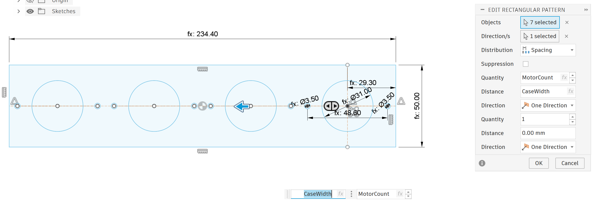
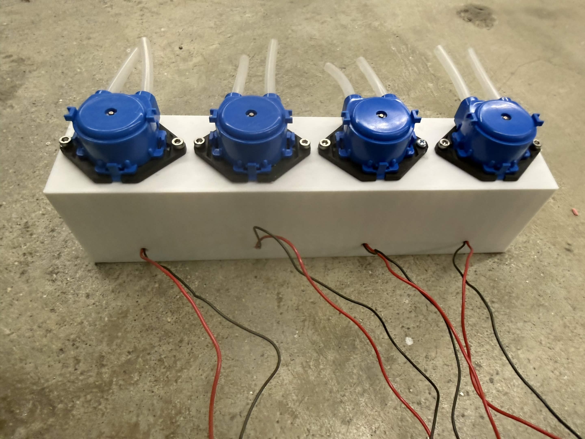
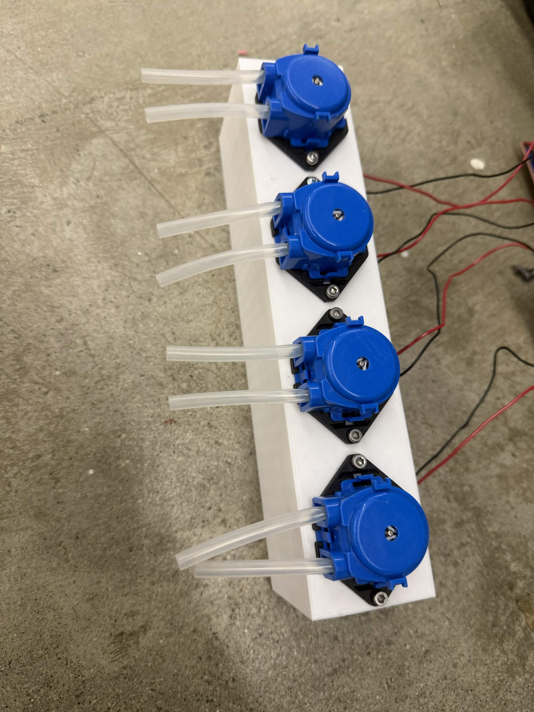
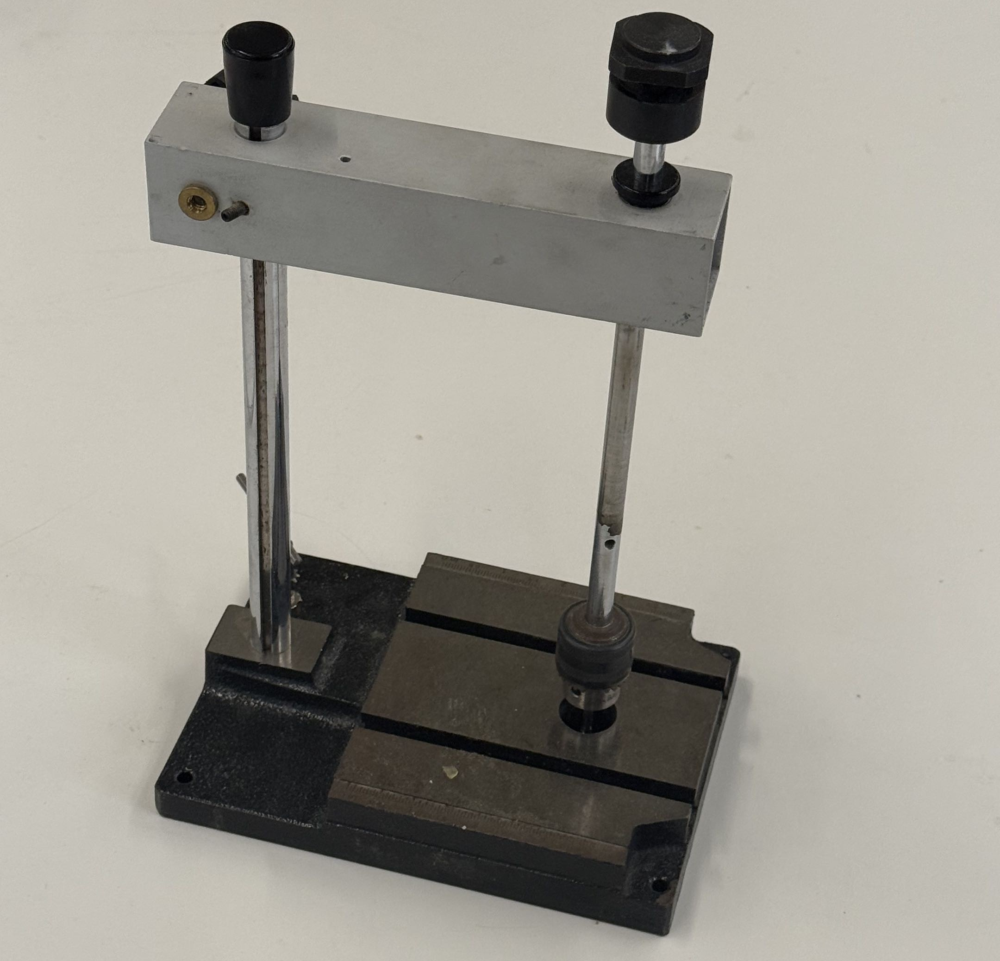

<div class="textcontainer">
<p class="margin"> </p>
<h3>Week 5: 3D Design & Printing</h3>
<h4>Assignment: Model and 3D print something</h4>
<div class="spacer"></div>
<p></p>
<p>For this week, I designed a casing to hold my four peristaltic pumps that I built and programmed a few weeks ago. This shape at first looks like it might have been made using subtractive methods, but there is one section that would have been very challening to achieve with something like a CNC.</p>
<p></p>
<p></p>
<p>That's these small holes orthoganol to the large holes which slot into the pumps. These small holes are even with the bottom of the large holes and are there in order to allow the two wires that control each of the pumps to have a dedicated outlet from the frame.</p>
<p>Other than that, I want to show off that I parameterized every measure for the casing:</p>
<p></p>
<p>And that I used a rectangular pattern to arbitrarily control the number of pumps the casing is built for. (I am eventually planning on having eight pumps instead of four so this will be pretty useful.)</p>
<p></p>
<p>This was a pretty simple print and actually required no additional supports at all, so I ran into no issues there and was able to get slide the pumps in and dig screws into the thinner holes along the top of the casing without worries!</p>
<p></p>
<p></p>
<div class="spacer"></div>
<p>For the photogrammatry part of this assignment, I used the lab's tapping machine.</p>
<p></p>
<p>This actually worked shockingly well on the very first attempt! I used my phone with the Polycam app. This only lets you do 10 scans for free, but the software quality was pretty impressive!</p>
<model-viewer
src="tappingMach.glb"
alt="Photogrammetry scan"
camera-controls
auto-rotate
style="width: 700px; max-width: 100%; height: 500px;">
</model-viewer>
<p>Also see a video of the 3D scan for easier cross-platform viewing:</p>
<iframe width="560" height="315" src="https://www.youtube.com/embed/_XFFA-pElU4?si=Jrm1__CbxlCgOrDy" title="YouTube video player" frameborder="0" allow="accelerometer; autoplay; clipboard-write; encrypted-media; gyroscope; picture-in-picture; web-share" referrerpolicy="strict-origin-when-cross-origin" allowfullscreen></iframe>
</div>